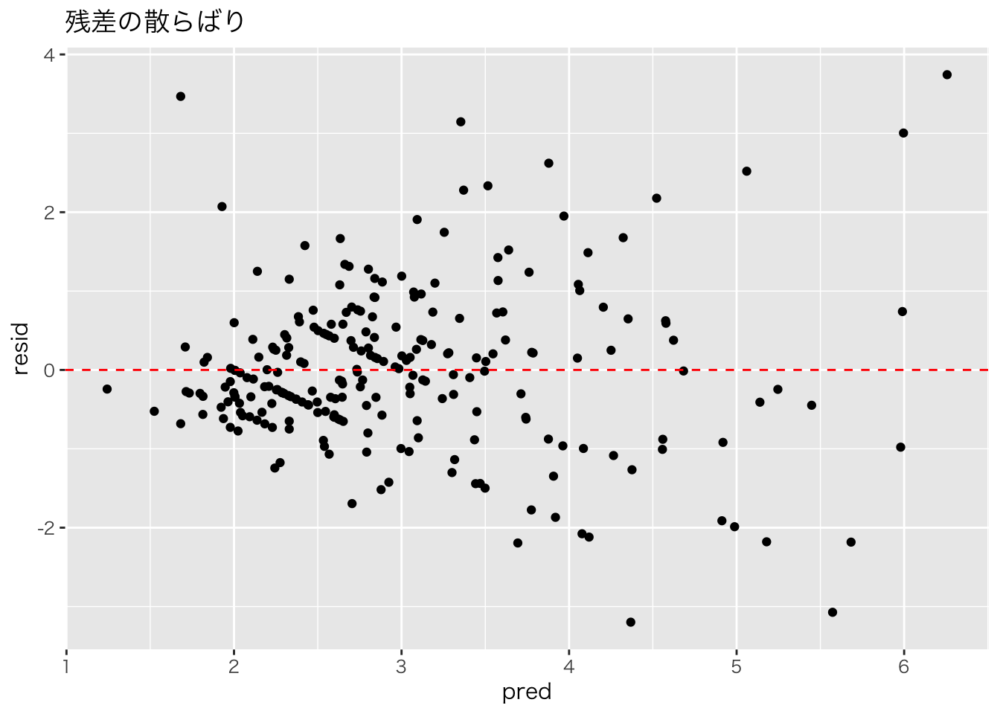

library(tidyverse)
url <- "https://raw.githubusercontent.com/mwaskom/seaborn-data/master/tips.csv"
tips <- read_csv(url)
cor(tips$total_bill, tips$tip)
#> [1] 0.6757341第11回 相関と単回帰分析
今回の目標
- 相関係数を計算し、2変数の関係の強さを理解する。
- 単回帰分析を行い、結果（切片、傾き）を解釈する。
相関 (Correlation)
2つの変数の間に、直線的な関係があるかどうかを表す指標です。 相関係数 \(r\) は \(-1 \le r \le 1\) の値をとり、1に近いほど正の相関、-1に近いほど負の相関、0に近いほど無相関を表します。
tips データの total_bill と tip の相関係数を計算してみましょう。
単回帰分析 (Simple Linear Regression)
ある変数 \(x\)（説明変数）を使って、別の変数 \(y\)（被説明変数）を予測・説明するモデルを作ります。
\[ y = \beta_0 + \beta_1 x + \epsilon \]
- \(\beta_0\): 切片 (Intercept)
- \(\beta_1\): 傾き (Slope)
- \(\epsilon\): 誤差項
Rでは lm() 関数（Linear Model）を使います。 「支払総額 (\(x\)) が増えると、チップ (\(y\)) はどれくらい増えるか？」を分析します。
model <- lm(tip ~ total_bill, data = tips)
summary(model)
#>
#> Call:
#> lm(formula = tip ~ total_bill, data = tips)
#>
#> Residuals:
#> Min 1Q Median 3Q Max
#> -3.1982 -0.5652 -0.0974 0.4863 3.7434
#>
#> Coefficients:
#> Estimate Std. Error t value Pr(>|t|)
#> (Intercept) 0.920270 0.159735 5.761 2.53e-08 ***
#> total_bill 0.105025 0.007365 14.260 < 2e-16 ***
#> ---
#> Signif. codes: 0 '***' 0.001 '**' 0.01 '*' 0.05 '.' 0.1 ' ' 1
#>
#> Residual standard error: 1.022 on 242 degrees of freedom
#> Multiple R-squared: 0.4566, Adjusted R-squared: 0.4544
#> F-statistic: 203.4 on 1 and 242 DF, p-value: < 2.2e-16結果の解釈
Coefficients: の部分を見ます。
Estimate Std. Error t value Pr(>|t|)
(Intercept) 0.920270 0.159735 5.761 2.53e-08 ***
total_bill 0.105025 0.007365 14.260 < 2e-16 ***(Intercept)の Estimate:0.92- 切片です。\(x\)（支払総額）が0のときの \(y\)（チップ）の予測値です。
- ただし、支払総額が0ドルということは現実にはあり得ないので、この値自体に深い意味はないことが多いです。
total_billの Estimate:0.105- 傾きです。これが最も重要な数値です。
- 「支払総額が1ドル増えると、チップは約0.105ドル（約10.5セント）増える傾向がある」 と解釈します。
Pr(>|t|):total_billの行を見ると< 2e-16となっています。これは \(2 \times 10^{-16}\) 未満という非常に小さな値です。- 0.05よりはるかに小さいため、「傾きは0ではない（支払総額とチップには統計的に有意な関係がある）」と結論づけられます。
散布図に回帰直線を引く
ggplot2 で geom_smooth(method = "lm") を使うと、簡単に回帰直線を追加できます。
ggplot(tips, aes(x = total_bill, y = tip)) +
theme_gray(base_family = "HiraKakuProN-W3") +
geom_point() +
geom_smooth(method = "lm", color = "red")
残差プロット
回帰分析がうまくいっているか確認するために、予測値と残差（予測とのズレ）の関係を見ることがあります。
# データフレームに予測値と残差を追加 {.unnumbered}
tips_aug <- tips %>%
mutate(pred = predict(model), resid = residuals(model))
ggplot(tips_aug, aes(x = pred, y = resid)) +
theme_gray(base_family = "HiraKakuProN-W3") +
geom_point() +
geom_hline(yintercept = 0, color = "red", linetype = "dashed") +
labs(title = "残差プロット", x = "予測値", y = "残差")
課題
tipsデータを使って、size（人数）を説明変数、total_bill（支払総額）を被説明変数とする単回帰分析を行ってください。 人数が1人増えると、支払総額は何ドル増えると推定されますか？